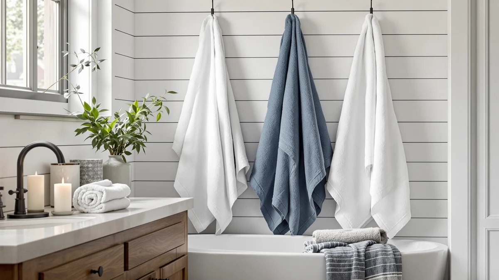

White Classic Wealuxe Green Review (2026): Worth It?
Prices and picks verified as of October 2026. Independent, reader-supported reviews.


Quick Answer
The White Classic Wealuxe Green is a 100% cotton, six-towel bath set priced at $37.99, built for shoppers who want a full matching set in one order rather than mixing singles from different brands. It is a solid, straightforward pick if you value color consistency and classic cotton over extras like oversized dimensions or a published GSM weight.
Our pick: White Classic Wealuxe Green Bath — $37.99 Check Price on Amazon
Bottom line: our top pick is the White Classic Wealuxe Green Bath Towels 24x50 Inch at $37.99.
Things to Know Before You Buy
- The White Classic Wealuxe Green set ships as six 24 x 50 inch bath towels in 100% cotton, all in the same forest-green color.
- At $37.99 for six towels, the per-towel cost works out to about $6.33, in line with the REDKISS and Utopia sets covered as alternatives below.
- The listing does not publish a GSM weight, so you cannot compare its thickness directly to the POLYTE set's stated 430 GSM.
- There is no published aggregate star rating or review count for this ASIN yet, so pricing and the listing itself are your main data points before buying.
This White Classic Wealuxe Green review looks at a six-towel cotton set that keeps surfacing on shortlists for budget-friendly towel bundles, and asks whether the $37.99 price tag earns it a spot in your linen closet. White Classic has built its catalog around straightforward cotton bedding and bath goods, and the Wealuxe Green line extends that same approach into a forest-green, 24-by-50-inch bath towel set. We are a research-based review site, so instead of running the towels through a lab, we compared the listed materials, sizing and price against the other cotton sets covered here, and checked how the set lines up against its closest competitors.
The short version: the White Classic Wealuxe Green set is a reasonable pick if you want six matching 100% cotton towels in one order, at a price that lands in the same range as the REDKISS, Utopia and POLYTE sets we cover as alternatives below. It is not the cheapest six-pack on the market, and the listing does not publish a GSM weight or an aggregate owner rating, which makes it harder to verify thickness claims against competitors that do share those numbers. Read on for the full breakdown of what the set gets right, where it falls short, and which alternative might suit your bathroom better.
Why You Should Trust Us
Best Bath Towels is written and edited by Ilane Tall, who has covered home textiles and bath products for this site since its founding. Every White Classic Wealuxe Green review and comparison we publish starts with the same ground rules: we do not run a fake testing lab, and we do not claim hands-on time with products we have not purchased. Instead, we pull the manufacturer specs, current Amazon pricing and the details available in the listing for each product, then compare them side by side against other sets in the same price range and category. When a listing is missing information, such as a GSM weight or a review count, we say so rather than guessing.
How We Compared
We did not put the White Classic Wealuxe Green towels through a physical trial. For this review, we compared its published specs, Amazon pricing and category positioning against several other cotton and microfiber towel sets in a similar price bracket, including the three alternatives detailed further down this page. For a product like this, where the core claims are material (100% cotton), size (24 by 50 inches) and pack count (six towels), that comparison covers most of what matters before you buy: how the set stacks up on price per towel, and how its sizing compares to oversized options like the POLYTE set. Where a listing is missing a data point that a competitor provides, such as a published GSM weight or an aggregate rating, we flag that gap in the drawbacks section below instead of guessing at a number.
Overview & Specs

White Classic Wealuxe Green Bath
What we like
- Six full-size, 24 x 50 inch towels arrive in one order, enough to outfit a full bathroom or guest suite at once.
- 100% cotton construction keeps the set in line with the material most buyers expect from a bath towel.
- The forest-green colorway matches easily with neutral bathroom fixtures.
- At $37.99 for six towels, the per-towel price stays close to the REDKISS and Utopia sets covered below.
Flaws but not dealbreakers
- The listing does not publish a GSM weight, so you cannot directly compare its thickness to the POLYTE set's stated 430 GSM.
- There is no aggregate star rating or review count yet on this ASIN, which limits how much you can check before buying.
- Six towels all in the same green limit your options if you want to mix colors across bathrooms.
| Material | 100% cotton |
| Size | Bath Towels 6-Pack, 24x50 Inches |
The White Classic Wealuxe Green set covers the basics of a bath towel purchase without extra features. Each of the six towels measures 24 by 50 inches, a standard bath towel size that works for everyday drying rather than the oversized, bath-sheet dimensions you will find on the POLYTE set covered below. The 100% cotton construction places it in the same material category as the Utopia and REDKISS sets, so the differences between these three largely come down to pack size, color options and price per towel rather than fabric type.
At $37.99 for six towels, the set works out to roughly $6.33 per towel, a price point aimed at buyers who want to furnish a full bathroom, guest room or small Airbnb in a single order. White Classic sells the Wealuxe Green line in a single forest-green colorway, which keeps the set visually consistent across all six towels but also means you are committing to one color rather than mixing shades. Because the listing does not publish a GSM weight, aggregate rating or review count, there is less third-party data available on this set than on alternatives like the POLYTE, which lists its 430 GSM weight directly. That gap does not disqualify the set, but it does mean you are weighing price and color against less documented detail than some competitors provide.
What We Liked
The biggest advantage of the White Classic Wealuxe Green set is how simple the purchase is. You order once and get six matching, full-size cotton towels, rather than piecing together a bathroom from singles bought separately or across different brands. That one-order convenience saves time and keeps your linen closet looking coordinated, especially if you are furnishing a space from scratch.
The 100% cotton material also puts this set on equal footing with other cotton options in this price range, including the Utopia and REDKISS sets covered as alternatives below. Most people buying a bath towel expect cotton rather than a synthetic blend, and White Classic sticks with that instead of adding coatings that can change how a towel feels or dries.
Price is another point in its favor. At $37.99 for six towels, the Wealuxe Green set lands within a few cents of the REDKISS and Utopia alternatives, which means you are not paying a premium for the green colorway or the White Classic name. For shoppers comparing sets strictly on dollars per towel, that parity makes the decision less about price and more about which color and pack size fits your bathroom.
What Could Be Better
The biggest gap in the White Classic Wealuxe Green listing is data. There is no published GSM weight, so you cannot compare how thick or dense this cotton is against a set like the POLYTE 430 GSM Microfiber Oversize, which states its weight upfront. There is also no aggregate star rating or review count attached to this ASIN yet, so you are buying largely on the strength of the listed specs and price rather than a documented track record.
Color choice is the other tradeoff. Because the set comes in a single forest-green colorway, you cannot mix towel colors within the same order the way you could by buying individual towels or a set offered in multiple color options. If your bathroom fixtures or existing linens do not pair well with a deep green, this particular set narrows your options rather than expanding them.
Who Is It For?
The White Classic Wealuxe Green set makes the most sense for buyers who want a complete, color-matched bath towel set in a single purchase and who are comfortable buying on specs and price rather than a long documented track record. If a uniform green palette works with the rest of the room, this is an easy way to check that box in one order.
It is a weaker fit if you want documented thickness data before buying, since the lack of a published GSM weight puts it at a disadvantage next to the POLYTE set below. It is also not the right choice if you want to mix towel colors in one order, since all six towels ship in the same forest-green shade.
Alternatives to Consider
If the White Classic Wealuxe Green set does not fit your bathroom or budget, these three alternatives sit in a similar price range and are worth comparing before you buy.

Editor's Pick
REDKISS Large Bath Towels Set
A large-format towel set at the same price as the White Classic Wealuxe Green, worth a look if you want bigger towels for the same budget.
$37.99
Check Price on Amazon
Best Value
Utopia Towels 4 Pack Premium
Four premium towels instead of six, a fit for smaller households that want fewer, higher-end pieces for about the same price as the White Classic Wealuxe Green set.
$37.99
Check Price on Amazon
Premium Choice
POLYTE 430 GSM Microfiber Oversize
A microfiber oversize set with a published 430 GSM weight, the pick if documented thickness and bigger dimensions matter more to you than matching cotton towels.
$37.70
Check Price on AmazonIs the White Classic Wealuxe Green towel set worth the price?
At $37.99 for six 100% cotton towels, the White Classic Wealuxe Green set is priced in line with comparable cotton sets like the REDKISS and Utopia options covered above, so it is a reasonable buy if you want a matched green set and do not…
What size are the towels in the White Classic Wealuxe Green set?
Each of the six towels measures 24 by 50 inches, a standard bath towel size.
Frequently Asked Questions
Is the White Classic Wealuxe Green towel set worth the price?
What size are the towels in the White Classic Wealuxe Green set?
Does the White Classic Wealuxe Green set come in other colors?
Final Verdict
This White Classic Wealuxe Green review comes down to a straightforward tradeoff: six matching 100% cotton towels in one forest-green order, priced evenly against comparable six-and-four-piece sets, but without the published GSM weight or review history that some competitors offer. If you want a complete, color-coordinated set from White Classic and are comfortable buying on price and material alone, the Wealuxe Green set delivers. If documented thickness or a published rating matters more to you, the POLYTE 430 GSM Microfiber Oversize set is worth comparing first.